Think IT（シンクイット）
https://thinkit.co.jp/
【Think IT】“オープンソース技術の実践活用メディア” をスローガンに、インプレスグループが運営するエンジニアのための技術解説サイト。開発の現場で役立つノウハウ記事を毎日公開しています。
フィード
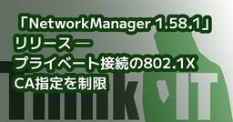
「NetworkManager 1.58.1」リリース ─ プライベート接続の802.1X CA指定を制限
Think IT（シンクイット）
「NetworkManager 1.58.1」リリース ─ プライベート接続の802.1X CA指定を制限 WPA3ネットワークへの自動接続やDNSポート転送、モデムのIPv4フォワーディングも修正kawahara2026年8月22日シェア ポスト はてブ 優先するニュース提供元に追加 NetworkManager開発チームは8月21日(現地時間)、Linux向けネットワーク管理ソフトウェア「NetworkManager 1.58.1」をリリースした。 「NetworkManager」は、有線LAN、Wi-Fi、モバイルブロードバンド、VPNなどのネットワーク接続を管理するオープンソースのソフトウェア。デーモンのほか、コマンドラインツールの「nmcli」、テキストユーザーインターフェースの「nmtui」、D-Bus APIなどを提供している。 「NetworkManager 1.58.1」は、7月に公開されたNetworkManager 1.58系列のメンテナンスリリース。ユーザーを指定したプライベート接続における802.1X認証の安全性強化、WPA3ネットワークへの自動接続、DNSおよびモバイルブロードバンド関連の不具合修正などが行われている。 「NetworkManager 1.58.1」のハイライトは次の通り。 「NetworkManager 1.58.1」は、Webサイトから入手できる。(川原 龍人/びぎねっと)[関連リンク]ReleaseNEWS この記事をシェアしてください シェアする ポストする >ブクマする noteで書く 優先するニュース提供元にThink ITを追加 前の記事「Rust 1.98.0」リリース ─ 浮動小数点演算向けalgebraicメソッドを導入 関連記事この記事の筆者 kawahara kawaharaのプロフィールを見る 筆者の人気記事 「Linux Mint 22.3」、Linux 7.0搭載HWE ISOを公開8月11日 0:05 「GNU Linux-libre 7.2」リリース ─ AMD、Qualcomm、Intel関連ドライバのdeblob処理を更新8月21日 0:33 「SparkyLinux 8.4」リリース ─ 32bit PC向けISOを復活8月11日 23:28 軽量Linuxディストリビューション「D
22分前
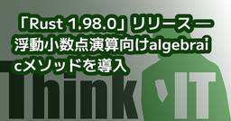
「Rust 1.98.0」リリース ─ 浮動小数点演算向けalgebraicメソッドを導入
Think IT（シンクイット）
「Rust 1.98.0」リリース ─ 浮動小数点演算向けalgebraicメソッドを導入 整数の高速な書式化APIを安定化、ManuallyDropとBoxの動作も正式に保証kawahara2026年8月22日シェア ポスト はてブ 優先するニュース提供元に追加 rust-lang.orgは8月20日（現地時間）、プログラミング言語「Rust 1.98.0」をリリースした。 「Rust」は、メモリ安全性と高い実行性能を実現することを目指して開発されているオープンソースのプログラミング言語。ガベージコレクタを使用せず、所有権と借用の仕組みによってメモリを管理することが特徴。 「Rust 1.98.0」では、コンパイラによる浮動小数点演算の並べ替えなどを明示的に許可するalgebraicメソッド、高速な整数文字列変換を行うformat_intoメソッドなどが安定化された。 「Rust 1.98.0」のハイライトは次の通り。 「Rust 1.98.0」は、Webサイトからダウンロードできる。(川原 龍人/びぎねっと)[関連リンク]アナウンスリリースノートRust 1.98.0(GitHub Release) この記事をシェアしてください シェアする ポストする >ブクマする noteで書く 優先するニュース提供元にThink ITを追加 前の記事「KDE Gear 26.08.0」リリース ─ Okularの署名機能を強化 次の記事「NetworkManager 1.58.1」リリース ─ プライベート接続の802.1X CA指定を制限 関連記事この記事の筆者 kawahara kawaharaのプロフィールを見る 筆者の人気記事 「Linux Mint 22.3」、Linux 7.0搭載HWE ISOを公開8月11日 0:05 「GNU Linux-libre 7.2」リリース ─ AMD、Qualcomm、Intel関連ドライバのdeblob処理を更新8月21日 0:33 「SparkyLinux 8.4」リリース ─ 32bit PC向けISOを復活8月11日 23:28 軽量Linuxディストリビューション「DietPi 10.6」リリース ─ 新たに5機種のSBCへ対応8月9日 23:44 「Linux 7.2」リリース ─ キャッシュを考慮したタスクスケジュ
1日前
「KDE Gear 26.08.0」リリース ─ Okularの署名機能を強化
Think IT（シンクイット）
「KDE Gear 26.08.0」リリース ─ Okularの署名機能を強化 DolphinのKDE Connect連携や検索機能を改善、KdenliveとMinuetも刷新kawahara2026年8月21日シェア ポスト はてブ 優先するニュース提供元に追加 KDEは8月20日（現地時間）、KDEアプリケーション集の最新版「KDE Gear 26.08.0」をリリースした。 「KDE Gear」は、ファイルマネージャのDolphin、文書ビューアのOkular、端末エミュレータのKonsole、動画編集ソフトウェアのKdenliveなど、KDEが開発する多数のアプリケーションをまとめたリリース。KDE Plasmaとは別に、約4カ月ごとに新しいバージョンが公開されている。 「KDE Gear 26.08.0」では、Okularの署名機能と注釈処理の改善、DolphinのKDE Connect連携強化、Konsoleに表示されたファイルやURLなどをドラッグする機能、Kdenliveの編集機能拡張などが行われている。 「KDE Gear 26.08.0」のハイライトは次の通り。 「KDE 26.08.0」のソースコードは、Webサイトからダウンロードできる。(川原 龍人/びぎねっと)[関連リンク]リリースアナウンスChangelogKDE Applications この記事をシェアしてください シェアする ポストする >ブクマする noteで書く 優先するニュース提供元にThink ITを追加 前の記事「RPM 6.1.0」リリース ─ 特定環境下でインストール時間を最大26％短縮 次の記事「Rust 1.98.0」リリース ─ 浮動小数点演算向けalgebraicメソッドを導入 関連記事この記事の筆者 kawahara kawaharaのプロフィールを見る 筆者の人気記事 「Linux Mint 22.3」、Linux 7.0搭載HWE ISOを公開8月11日 0:05 「GNU Linux-libre 7.2」リリース ─ AMD、Qualcomm、Intel関連ドライバのdeblob処理を更新8月21日 0:33 「SparkyLinux 8.4」リリース ─ 32bit PC向けISOを復活8月11日 23:28 軽量Linuxディストリビューション「D
1日前

MySQLの「ST_Length()」関数で線の長さを測ってみよう
Think IT（シンクイット）
はじめに前回は「ST_Union()」関数を使って、POLYGONを合体させる方法を紹介しました。今回は、線の長さを計測する「ST_Length()」関数を紹介します。ST_Length()は、鉄道路線の総延長を計算したり、道路の長さを比較したりと、様々な場面で活用できます。ST_Length()の基本ST_Length()は、LineStringの値を与えると、その長さを返す関数です。まずはデカルト座標系でシンプルな例を見てみましょう。mysql> SET @g1=ST_GeomFromText('LINESTRING(0 0, 3 4)');mysql> SELECT ST_Length(@g1);+----------------+| ST_Length(@g1) |+----------------+| 5 |+----------------+1 row in set (0.000 sec)原点(0,0)から点(3,4)への線分の長さが5と返ってきました。(0,0)から(3,4)というのは、各辺の長さが3,4,5の三角形の斜辺に相当するものですから、正しい結果が返ってきたと判断できます（三平方の定理（√(3^2+4^2) = 5））。ST_Length()関数は LineString の長さを返すものなので、もちろん2つの点による線分の長さだけでなく、3点以上から構成される折れ曲がった線全体の長さを測ることもできます。先ほどの三角形の斜辺ではない部分、つまり上図の赤線部分（(0,0)から(3,0)を経由して(3,4)に至る線）の長さを求めてみましょう。mysql> SET @g2=ST_GeomFromText('LINESTRING(0 0, 3 0, 3 4)');mysql> SELECT ST_Length(@g2);+----------------+| ST_Length(@g2) |+----------------+| 7 |+----------------+1 row in set (0.000 sec)正しく 2本の線分要素の合計となる、3 + 4 = 「7」 という結果を得られたことが確認できました。地理座標系ではメートル単位で結果を得られるここまではデカルト座標系（SRIDなし）での例でしたが、ST_Length()では当然のよう
2日前
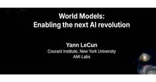
人工知能分野で著名なYann LeCun氏教授の世界モデル（JEPA）を解説する動画を紹介
Think IT（シンクイット）
人工知能の研究者として著名なNYUのYann LeCun氏が行った「World Models:Enabling the next AI revolution」という動画から「人間レベルを目指すなら生成AI、大規模言語モデルを使うことは諦めろ」と力説する講義を紹介する。これは2026年6月9日に公開されたもので、ETH Zurich（スイス連邦工科大学チューリッヒ）のComputer Vision and Geometry Groupのチャネルで公開されている。実際に撮影された日時や場所は明らかではないものの、大学の講義室でのセッションと思われる。●動画：Yann LeCun: World Models: Enabling the next AI revolution 動画は約1時間という長さで、LeCun氏は自身が研究を続ける「世界モデル」構築の実装であるJEPA（Joint Embedding Predictive Architecture）を解説、背景やその実装例、関連する研究の紹介、動画を使ったデモなどで構成されているが、この稿ではこの長い講義の結論から最初に紹介したい。 このスライドが、LeCun氏が言いたかったことだろう。大規模言語モデル（LLM）が全盛の時代にあえて、それは人間レベルのAIを達成する経路ではないと断言している。しかしその結論に行きつくためには最初に戻って、どうして大規模言語モデルではダメなのか、なぜ大規模言語モデルが持て囃されているのか、そもそも知性とは何か、などを説明しているスライドに戻ろう。 ここでは今のAIはプログラムコードを書いたり、司法試験に合格できるレベルに達しているのに夕食のテーブルを片付けたり、家を掃除したり、20時間でクルマの運転を体得したりできない、と述べている。その理由として、生成AIはノイズが多い連続した状態や因果関係を認識して行動できないことを挙げている。ここで「ノイズが多い」ことと「人間レベル」の知性という点がポイントだ。大規模言語モデルで扱う文章は、基本的に文字以外の情報が混ざらないノイズの少ないデータである。それとは対照的に動画や写真、センサーからの出力はノイズが多くしかも連続的に入力される大量なデータであり、それを人間は必要な情報だけを抜き取って学習し、行動することができると説明。これは初めて入った部屋で
2日前
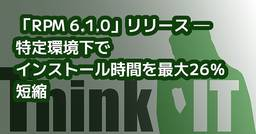
「RPM 6.1.0」リリース ─ 特定環境下でインストール時間を最大26％短縮
Think IT（シンクイット）
「RPM 6.1.0」リリース ─ 特定環境下でインストール時間を最大26％短縮 PKCS#11トークンによるファイル署名、新しいマクロ修飾子をサポートkawahara2026年8月21日シェア ポスト はてブ 優先するニュース提供元に追加 RPM Projectは8月20日(現地時間)、パッケージ管理システム「RPM 6.1.0」をリリースした。 「RPM」は、Fedora、Red Hat Enterprise Linux、openSUSEなど、多数のLinuxディストリビューションで利用されているパッケージ管理システム。RPMパッケージの作成、インストール、削除、検証、署名などを行うコマンドとライブラリを提供している。 「RPM 6.1.0」は、新機能とバグ修正を含む安定版アップデート。RPM 6.0.2以降の変更として、パッケージインストール処理の高速化、キーストアのロック機構改善、Name Service Switch(NSS)によるユーザーおよびグループ検索の復元、新しいマクロ構文などが導入されている。 「RPM 6.1.0」のハイライトは次の通り。 今回の性能改善では、RPMがスクリプトレットやファイルトリガーを実行する際のファイルディスクリプタ処理が変更された。従来は、開いているファイルディスクリプタを順番に調べ、fcntl()を使ってclose-on-execフラグを設定していた。「RPM 6.1.0」では、Linux 5.11以降とglibc 2.34以降の環境において、close_range()を利用して複数のファイルディスクリプタを一括処理する。プロジェクトによるテストでは、この変更によって一部の大規模なトランザクションで、インストール処理に要する時間が最大で約26％短縮されたという。対応していない環境では、従来の処理が引き続き利用される。 「RPM 6.1.0」は、Webサイト上から入手できる。(川原 龍人/びぎねっと)[関連リンク]リリースノートRPM 6.1.0(GitHub) この記事をシェアしてください シェアする ポストする >ブクマする noteで書く 優先するニュース提供元にThink ITを追加 前の記事「GNU Linux-libre 7.2」リリース ─ AMD、Qualcomm、Intel関連ドライバのdeblob処理を
2日前
「GNU Linux-libre 7.2」リリース ─ AMD、Qualcomm、Intel関連ドライバのdeblob処理を更新
Think IT（シンクイット）
「GNU Linux-libre 7.2」リリース ─ AMD、Qualcomm、Intel関連ドライバのdeblob処理を更新 Linux 7.2をベースに、rt722-sdcaやTI tac5xx2の新規ドライバもクリーニングkawahara2026年8月21日シェア ポスト はてブ 優先するニュース提供元に追加 GNU Linux libre Projectは8月16日(現地時間)、Linux 7.2をベースとした「GNU Linux-libre 7.2-gnu」をリリースした。 「GNU Linux-libre」は、Linuxカーネルからフリーでないソフトウェア・コンポーネントを除去したカーネル。ソースコードに見せかけて組み込まれたバイナリblobのほか、外部の非自由なファームウェアを実行時に読み込む処理や、それらの利用を案内するドキュメントなどを除去または無効化している。 GNU Linux-libreは、FSF Latin Americaによってメンテナンスされ、2012年からGNUプロジェクトの一部として開発されている。完全にフリーなソフトウェアのみで構成されるGNU/Linuxディストリビューションでの利用を主な目的としている。 「GNU Linux-libre 7.2-gnu」では、ベースとなるLinux 7.2で追加・変更されたドライバに合わせて、非自由なファームウェアへの参照などを除去するdeblob処理が更新されている。 「GNU Linux-libre 7.2-gnu」のハイライトは次の通り。 GNU Linux-libreでは、Linux本体に対する変更を最小限に抑える方針を採用しており、除去した非フリーなコンポーネントを同等の自由な実装で置き換えることは原則行っていない。このため、動作に非自由なファームウェアを必要とする一部のGPU、無線LANアダプタなどでは、GNU Linux-libreを利用すると機能が制限されたり、デバイスを利用できなくなるなどの可能性がある。 「GNU Linux-libre 7.2」は、Webサイトからダウンロードできる。(川原 龍人/びぎねっと)[関連リンク]リリースアナウンス この記事をシェアしてください シェアする ポストする >ブクマする noteで書く 優先するニュース提供元にThink ITを追加
2日前
「VirtualBox 7.2.16」リリース ─ LinuxホストでFREDに対応
Think IT（シンクイット）
「VirtualBox 7.2.16」リリース ─ LinuxホストでFREDに対応 VMSVGAの3D性能とWaylandの共有クリップボードを改善、RHEL 9.8対応も修正kawahara2026年8月21日シェア ポスト はてブ 優先するニュース提供元に追加 Oracleは8月18日(現地時間)、オープンソースの仮想化ソフトウェア「VirtualBox 7.2.16」をリリースした。 「VirtualBox」は、Windows、macOS、Linux、SolarisなどのホストOS上で、複数のゲストOSを仮想マシンとして実行できる仮想化ソフトウェア。仮想マシンのスナップショット、共有フォルダー、共有クリップボード、USBデバイスの接続などの機能を備えている。 「VirtualBox 7.2.16」のハイライトは次の通り。 「FRED(Flexible Return and Event Delivery)」は、x86プロセッサにおける割り込みや例外などのイベント処理を刷新する仕組み。VirtualBoxでは、FREDが有効になったLinuxホスト上で仮想マシンを起動すると、ホストのカーネルパニックが発生する問題が報告されていた。報告された環境では、Intel Panther LakeプロセッサとLinux 7.1系列のカーネルを搭載したFedora 44でFREDが有効になっており、仮想マシンの起動後にNMIの処理を契機としてカーネルパニックが発生していた。VirtualBox 7.2.16ではLinuxホスト側にFRED対応が追加され、このような環境における挙動が改善された。 グラフィック関連では、Linuxゲストなどで利用されるVMSVGAの3D性能が改善された。また、画面の更新回数が多くなった後にビデオ録画を停止すると、処理がハングアップすることがあった問題も修正されている。 「VirtualBox 7.2.16」は、Webサイトから入手できる。(川原 龍人/びぎねっと)[関連リンク]Change Log この記事をシェアしてください シェアする ポストする >ブクマする noteで書く 優先するニュース提供元にThink ITを追加 前の記事「BIND 9.20.27/9.21.25」リリース ─ NTA適用をEDEコード33で通知 次の記事「GNU
2日前

【導入から本番運用へ】AIエージェント、「導入8割・実装3割」のギャップを読み解く 1
1
Think IT（シンクイット）
はじめに「AIエージェント」という言葉が業界を席巻してから、およそ1年が経ちました。この間に発表された調査を眺めると、「8割が導入済み」という威勢のよい数字がある一方で、「自動化できている業務は3割」という冷静な数字もあり、結局進んでいるのか止まっているのか分かりにくい状況です。今回は、2026年上半期を中心に公開された国内外の調査データを横断し、数字が食い違う理由を整理したうえで、導入と成果のあいだに横たわる「ギャップ」の正体を読み解きます。1. 現在地-「導入8割」と「自動化3割」は矛盾しないまず、楽観側の数字から見ていきます。エージェント開発フレームワークを提供するCrewAIが年間売上高1億ドル以上、従業員数5,000人以上の企業(世界7地域)の経営幹部および上級幹部を対象に実施した企業調査によれば、回答企業の65%がすでにAIエージェントを利用しており、81%が「全社展開済み、または展開拡大中」と回答しています。ところが同じ調査の中に、対照的な数字も含まれています。AIエージェントで自動化できているワークフローは、平均で31%にとどまるのです。つまり「エージェントを導入したか」と問えば8割が手を挙げ、「業務がエージェントで回っているか」と問えば3割に落ちる。この2つの数字は矛盾しているのではなく、「導入」という言葉の定義が調査ごとに違うだけです。PoC(概念実証)を含めるのか、全社展開だけを数えるのかで、数字は簡単に倍以上変わります。では、8割と3割のあいだにいる「入れたのに回っていない」企業では、何が起きているのでしょうか。【出典】「Survey: Enterprises move AI agents from pilots to production」(Digital Commerce 360 2026/02/11)2. なぜ止まるのか―原因は技術ではなく「設計」Gartnerは2025年6月の発表で、agentic AIプロジェクトの40%超が2027年末までに中止されるとの予測を示しました。予測されている理由として挙げられているのは、以下の3つです。コストの膨張ビジネス価値の不明確さリスク統制の不足このように、モデルの性能不足が理由に入っていないことは示唆的です。同じ発表でGartnerは「agent washing」という問題も名指ししています。
3日前

「AIが勝手にVMを消した」を防ぐ仕組み——NutanixのMCPサーバーが既存のRBACと監査をそのままAIエージェントに継承させる
Think IT（シンクイット）
📌 このニュース、3行で押さえるなら 📌Nutanixが、Nutanix Cloud Platform(NCP)向けのMCPサーバーをオープンソースソフトウェアとして公開。GitHub Copilot、Claude Code、CursorなどのAIアシスタントとNCPの間に立ち、自然言語のリクエストをインフラAPI操作へ変換するMCPサーバーはNutanix Prism v4 API Gateway上に構築されており、接続されたAIツールはNCPのガバナンスときめ細かなアクセス制御をそのまま継承する。実行・統制・セキュリティ制御はすべてPrism v4 API Gateway側が担う細粒度のRBAC、スロットリングとメータリング、包括的な監査ログ、非同期タスク管理の4点を備える。ヒューマン・イン・ザ・ループにより運用者の監督を維持したまま、システム状態の分析や診断、自動化ワークフローの準備をAIに任せられる📝 Think IT編集部の見解 📝この発表の勘所は、MCPサーバー自体には権限を持たせていない設計にある。MCPサーバーは「セキュアなパススルー」と位置づけられており、実行・統制・セキュリティ制御はすべてPrism v4 API Gatewayが担う。つまりAIエージェント用に新しい権限体系を作るのではなく、既に運用されているRBACや監査の仕組みをそのまま適用する構造だ。運用中の基盤にAIを持ち込むとき、最も面倒なのは「エージェント用の権限をどう設計するか」という追加作業だが、この設計ならその負担が生じない。スロットリングの説明に「エージェント・スウォーム攻撃の防止」という表現が使われている点も目を引く。人間の操作を前提にしたAPIレート制限は、エージェントが並列で大量のリクエストを投げる状況を想定していない。悪意の有無にかかわらず、自律エージェントが暴走した際にプラットフォーム側で止められるかどうかは、実運用では避けて通れない論点になる。監査ログについても「どのAIエージェントがどのコマンドを発行したか」を可視化すると明記されている。人間のオペレーターIDだけでは追跡できない世界に入っていることを、ベンダー側が前提として認めた設計と言える。一方で、慎重に読むべき点もある。リリースは本番環境への無支援の変更をリスクとして挙げたうえで、AIアシスタントの...
3日前
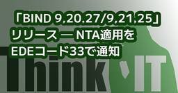
「BIND 9.20.27/9.21.25」リリース ─ NTA適用をEDEコード33で通知
Think IT（シンクイット）
「BIND 9.20.27/9.21.25」リリース ─ NTA適用をEDEコード33で通知 RPZ更新を高速化、TSIG生成処理やdnssec-signzoneの安全性に関わる不具合も修正kawahara2026年8月19日シェア ポスト はてブ 優先するニュース提供元に追加 Internet Systems Consortium(ISC)は8月17日(現地時間)、DNSサーバBINDのポイントリリースとなる「BIND 9.20.27/9.21.25」を発表した。 「BIND 9.20.27」は、現在サポートされている安定系列のメンテナンスリリース。「BIND 9.21.25」は、将来の安定系列に向けて開発が進められている開発ブランチのリリースとなる。 「BIND 9.20.27/9.21.25」では、Negative Trust Anchor(NTA)が適用された応答をExtended DNS Error(EDE)コード33で通知する機能の追加、RPZ更新処理の高速化のほか、複数の不具合修正が施されている。 「BIND 9.20.27/9.21.25」のハイライトは次の通り。 今回追加された「EDEコード33」は、Negative Trust Anchorが有効になっているためにDNSSEC検証を行わず、名前解決に成功したことをクライアントや運用者へ通知するもの。NTAは、DNSSECの設定不備などによって本来は検証に失敗するドメインについて、一時的に検証を無効化するために利用される。EDEコードを応答に含めることで、NTAが名前解決結果に影響していることを確認しやすくなった。 「BIND 9.20.27/9.21.25」は、Webサイトから入手できる。(川原 龍人/びぎねっと)[関連リンク]リリースノート(9.20.27)リリースノート(9.21.25)Changelog(9.21.25) この記事をシェアしてください シェアする ポストする >ブクマする noteで書く 優先するニュース提供元にThink ITを追加 前の記事「KDE Plasma LTS」を最低3年間保守する「bullet-proof KDE Software」イニシアチブ発表 次の記事「VirtualBox 7.2.16」リリース ─ LinuxホストでFREDに対応 関連記事この記事の
3日前

「Ruby」の「Gosu」でデスクトップゲーム「Color」を開発してみよう
Think IT（シンクイット）
はじめにこの連載では、さまざまなプログラミング言語やライブラリで同じゲームを開発することで、容易にそのプログラミング言語に入門します。第9回の今回はプログラミング言語「Ruby」を使って、次のURLのようなColorゲームを作ります。こちらからアセットをダウンロードしておいてください。ColorゲームについてColorゲームの内容は第1回でも解説した通り、ゲームを開始したら、赤緑青の色ブロックをクリックします。すると背景色にその色が混ぜられるので、どんどんクリックして真っ白な背景にしていこうというゲームです。プログラミング言語についてプログラミング言語「Ruby」はまつもと ゆきひろ氏(Matz)が開発した言語で、純国産の言語では唯一国際電気標準会議(IEC)に認証されたプログラミング言語です。文法が読みやすく、数値や文字列を含めほぼすべてがオブジェクトのオブジェクト指向言語で、開発効率が高く、パッケージ管理システム「Gem」により多くのライブラリを利用できます。RubyではWebアプリケーション、自動化ツール、データ処理、API開発、コマンドラインツール、ゲームなどを作ることができます。Gosuについて「Gosu」は2Dゲーム開発に必要な基本機能が揃ったライブラリです。標準でウィンドウの作成、画像の表示・描画、キーボードやマウス入力の取得、効果音・BGMの再生、フォントを使った文字表示、ゲームループ(更新・描画)の管理ができます。Gosuライブラリは内部でOpenGLを使っているためOpenGLかOpenGL互換のMesaが必要です。開発のために必要となる環境の準備今回必要となる「Ruby」「Visual Studio Code」「Gosuライブラリ」を準備します。なお、今回はWindowsについてのみ解説します。macOSやLinuxでのセットアップ方法についてはGitHubのGosuページを参考にしてください。RubyはWindowsで次のURLから「RubyInstaller」を使ってインストールします。VS Codeは次のURLからインストールします。これらが揃ったらターミナルで次のコマンドを実行し、Gosuライブラリをインストールします。・Gosuライブラリのインストール$ gem install gosuプロジェクトを作成しよう「colorGosu」フ
18日前
インシデントレスポンスは「なぜ、そうするのか」ーレジリエンス工学から読み解くSREの思想 1
Think IT（シンクイット）
はじめに「SRE Kaigi」というSREに関するカンファレンスを主催しております、しょっさんと申します。今回は「インシデントレスポンスに関する連載企画」ということで、SRE Kaigiに縁のある方たちで連載していきます。第1回目の今回は、インシデントレスポンスをレジリエンス工学から読み解いていきたいと思います。皆さんは、「インシデントレスポンス」と聞いた時に何を思い浮かべますか。非難なき文化、インシデントコマンダーなどの役割、ポストモーテム(= Post-Incident Review)など、様々な"How"は思い浮かぶかもしれません。しかしながら、"Why"に関してはどうでしょうか。なぜそのHowが成り立ったのか、もともとの発端を調べてみた方は少ないかも知れません。この記事では、多くのSRE文献から引用されているレジリエンス工学の分野から調査していきます。「レジリエンス工学」とはその話をする前に、レジリエンス工学について簡単に説明します。レジリエンス工学とは、その名前の通り「レジリエンス」(回復力、弾性力)について、主に「予測できない状況においても、仕組みやシステムが機能し続けられるようにする」といったことを研究している学問です。起こりとしては1973年に生態学者のCrawford Stanley Holling氏が「Resilience and Stability of Ecological Systems」という論文を発表したところから始まります。この中で、自然では森林火災や特定の生物の大量発生など、多くの障害に見舞われながらも「なぜ平衡状態にあるのか」といった疑問から、生態系が完全に崩れ得ないように戻る力を指して「レジリエンス」と呼びました。この考え方が、後年様々な分野へと飛び火し、最終的にレジリエンス工学の勃興へと至ったのです。 レジリエンス工学が広く知られるきっかけとなった書籍「Resilience Engineering: Concepts and Precepts」は、O'Reilly Online Learningでも読むことができるため、登録されている方はぜひ読んでみてください。レジリエンス工学とSREここまで読んで、「そんなレジリエンス工学とSREはどういった関係性があるのか」と不思議に思われた方もいらっしゃるかも知れません。実はSREはレジ
4日前
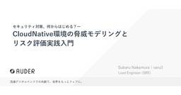
【クラウドネイティブ会議】「うちのサービスは大丈夫？」に答えるためのクラウドネイティブ環境の脅威モデリング入門
Think IT（シンクイット）
クラウドネイティブ環境の普及により、Kubernetesをはじめとするコンテナ基盤を本番環境で運用するチームは増えている。一方で、ワークロードが動的に生成・破棄され、内部通信も単純には信頼できない環境では、従来型の境界防御だけでは守るべきポイントを判断しにくい。クラウドネイティブ会議のセッション「セキュリティ対策、何から始める？――CloudNative環境の脅威モデリングとリスク評価実践入門」では、AUDERのLead Engineer（SRE）である中村昴氏が、脅威ベースアプローチを軸に、DFD、STRIDE、リスク評価を用いた実践手順を解説した。なぜ脅威ベースでセキュリティ対策を考えるのかAUDERの中村昴氏は、ソーシャルゲームやWebサービスのインフラエンジニア、SREとして10年ほど経験し、現在は同社のLead EngineerとしてセキュリティチームやSREチームの立ち上げを担当している。セッションの本題は、クラウドネイティブ環境におけるセキュリティ対策をどこから始めるかである。中村氏はまず「情報セキュリティ10大脅威 2026」を取り上げた。組織編では「ランサム攻撃による被害」が11年連続でランクインし、新たに「AIの利用をめぐるサイバーリスク」も初選出された。ただし重要なのは、脅威ランキングそのものではない。中村氏は、10大脅威の順位は毎回変動するが、ランキングは各組織で実施すべき対策の優先度と必ずしも一致しないことを示した。攻撃手口や動向に加え、自組織が抱える要因を把握し、組織ごとの状況を考慮して優先度を決める必要がある。ここで中村氏は「うちのサービスは、大丈夫なの？」という問いを提示した。これに対して「脆弱性診断をやっているから大丈夫です」「ISMSを取得しているから大丈夫です」「クラウドのベストプラクティスに沿っているから大丈夫です」「EDRやSASEを入れているから大丈夫です」と答えることはできる。しかしそれだけでは自社サービスにとって何が本当に危険で、どの対策がどの脅威を防いでいるのかを説明しきれない。 中村氏は前提として、セキュリティとはCIA、すなわち機密性（Confidentiality）、完全性（Integrity）、可用性（Availability）のいずれかを脅かすものを減らすことだと整理した。さらにリスクは「脅威×脆弱性×資産
4日前
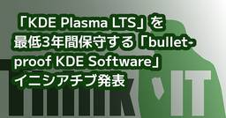
「KDE Plasma LTS」を最低3年間保守する「bullet-proof KDE Software」イニシアチブ発表
Think IT（シンクイット）
「KDE Plasma LTS」を最低3年間保守する「bullet-proof KDE Software」イニシアチブ発表 Kubuntu Focusが10万米ドル超を拠出、KDEのCIノードも3台追加kawahara2026年8月18日シェア ポスト はてブ 優先するニュース提供元に追加 Kubuntu Focus、Techpaladin Software、KDE e.V.は8月13日(現地時間)、KDE Plasma 6.6 LTSと関連ソフトウェアを長期間保守する「bullet-proof KDE Software initiative」を発表した。 今回発表されたイニシアチブでは、KDE Plasma 6.6 LTSと関連するKDE Frameworks、KDE Gearアプリケーションに対し、最低3年間にわたってバグ修正とセキュリティアップデートを提供する。Kubuntu 26.04 LTSの3年間のサポート期間を通じて、固定されたKDE系列を安定して利用できる環境の提供を目指す。 Linuxディストリビューションで最新のKDEリリースを採用した場合、新機能や過去の問題の修正を早期に利用できる一方、新しい不具合やリグレッションが入り込む可能性がある。特定のKDEリリースを固定すれば安定性を高められるが、上流でサポートが終了した後はバグ修正やセキュリティアップデートを受けられなくなる場合がある。 今回の取り組みでは、固定されたKDE Plasma 6.6 LTS系列に資金を提供して保守を継続することで、機能の安定性と長期的なアップデートの両立を図る。特に、業務環境や企業、公共機関などでの利用を想定している。 「bullet-proof KDE Software Suite」は現在、Kubuntu 26.04 LTSで提供されている。Kubuntu Focusも、自社が販売するすべてのシステムへKubuntu 26.04 LTSの一部として同ソフトウェア群を搭載している。 この取り組みはKubuntu Focus製品だけに限定されるものではなく、オープンソースの共同プロジェクトとして進められる。他のハードウェアベンダーやLinuxディストリビューション、企業なども、資金提供、ソフトウェアの配布、開発への参加が可能となっている。(川原 龍人/びぎねっと)[関連リ
4日前
「Visual Basic.NET」の「Windows Forms」でデスクトップゲーム「Color」を開発してみよう
Think IT（シンクイット）
はじめにこの連載では、さまざまなプログラミング言語やライブラリで同じゲームを開発することで、容易にそのプログラミング言語に入門します。第7回の今回はプログラミング言語「Visual Basic.NET」を使って、次のURLのようなColorゲームを作ります。こちらからアセットをダウンロードしておいてください。前回の「C#」とほとんど1:1で書き換え可能ですが、Namespace(名前空間)を使っていないこと、最大のRGB要素を探すのにソート機能を使っていることが違いです。ColorゲームについてColorゲームの内容は第1回でも解説した通り、ゲームを開始したら、赤緑青の色ブロックをクリックします。すると背景色にその色が混ぜられるので、どんどんクリックして真っ白な背景にしていこうというゲームです。プログラミング言語についてプログラミング言語「Visual Basic」はMicrosoftが開発したWindowsデスクトップアプリ(Visual Basic.NET、Visual Basic 6)、Webアプリ(ASP.NET)、Excelマクロ(Visual Basic for Applications)向けの言語です。文法が読みやすい、GUIアプリを作りやすい、初学者向けの教材が多いという特徴があります。Windows Formsについて「Windows Forms」は「WinForms」とも呼ばれ、「.NET」を使ってUIパーツなどのGUIを構築できるデスクトップアプリを開発できます。開発のために必要となる環境の準備今回必要となる、無料版の「Visual Studio 2026」(以下、VS2026)を準備します。次のURLからVisual StudioインストーラーをダウンロードしてVS2026のC#をインストールしてください。プロジェクトを作成しようVS2026を起動したら「Create a new project」をクリックし、コンボボックスで「Visual Basic」と「Windows」を選び「Windows Forms App」をダブルクリックします。「Project name」を「colorVBForms」とタイプして「Next」ボタンをクリックし、「Framework」を最新のものを選んで「Create」ボタンをクリックしてプロジェクトを新規作成しま
2ヶ月前
「C/C++」の「RayLib」でコンソールゲーム「Color」を開発してみよう
Think IT（シンクイット）
はじめにこの連載では、さまざまなプログラミング言語やライブラリで同じゲームを開発することで、容易にそのプログラミング言語に入門します。第8回の今回はプログラミング言語「C/C++」を使って、次のURLのようなColorゲームを作ります。こちらからアセットをダウンロードしておいてください。コンソールアプリはデスクトップアプリではありますが、昔で言うMS-DOSに当たるターミナルから起動するアプリです。ColorゲームについてColorゲームの内容は第1回でも解説した通り、ゲームを開始したら、赤緑青の色ブロックをクリックします。すると背景色にその色が混ぜられるので、どんどんクリックして真っ白な背景にしていこうというゲームです。プログラミング言語についてプログラミング言語「C/C++」はベル研究所が開発した、アプリやカーネルなど低レベルな(より深い層でという意味で)処理速度が要求される場面で使われる言語です。機械寄りのC言語にオブジェクト指向を加えたのがC++言語で、大規模開発で威力を発揮するのが特徴です。RayLibについて「RayLib」はプログラミング言語C/C++で2Dグラフィックスを扱うゲームなどのコンソールアプリを開発できるライブラリです。シンプルに関数をまとめてくれているので、C/C++プログラミング入門用に非常に向いています。※はっきりとは分からないのですが、コメントアウトなどで全角文字を書くとバグがあるようです。画面が真っ黒になったらアンドゥしてバグを探してみてください。開発のために必要となる環境の準備今回必要となる、無料版の「Visual Studio 2026」(以下、VS2026)を準備します。次のURLからVisual StudioインストーラーをダウンロードしてVS2026の「C++によるデスクトップ開発」をインストールしてください。また、Windows以外にもmacOSやLinuxでも開発できますが、それらの開発環境のセットアップ方法は次で説明する「raylib-quickstart」の「README.md」を参考にしてください。プロジェクトを作成しようGitHubから「raylib-quickstart-main」をダウンロードし、解凍して「build-VisualStudio2026.bat」を実行するとプロジェクトが作成されます。VS2
1ヶ月前
【サーバーエンジニア編】障害対応でヒーローになるな！サーバー保守で「想定外の炎上」を防ぐ、先回りのマネジメント術
Think IT（シンクイット）
はじめに「エンジニア」とひと口に言っても、ソフトウェア、フロントエンド、サーバーなど、その役割によって現場で直面するトラブルはさまざまです。本連載では、PMO(Project Management Office)として多くの現場を経験してきた甲州が、それぞれのエンジニアが抱える課題の回避策を深掘りしていきます。第7回の主役は、「サーバーエンジニア」です。サーバーエンジニアの業務は、大きく次の2つに分けられます。ゼロからシステム基盤を作り上げる「新規構築」フェーズ完成したシステムを維持・メンテナンスし続ける「運用・保守」フェーズこの記事は特に、後者の「運用・保守」業務に携わっている方、あるいはこれから携わる方に向けて書いています。毎日同じような監視業務やメンテナンスを繰り返していると、「自分は成長しているのだろうか」「構築をやっている同期の方が輝いて見える」と悶々としてしまうことはありませんか？ しかし、「今あるものを維持しながら、どう良くしていくか」を考える運用・保守業務の中でも、十分に成長できる機会は眠っています。今回も失敗事例を紹介しつつ、あなたが日々行っている業務の価値を再認識し、キャリアアップにつなげるためのPMO視点を解説します。サーバー保守現場の失敗事例──「想定外」が招く悲劇システムが安定稼働しているとき、サーバーエンジニアの存在は空気のように扱われがちですが、ひとたび問題が起きれば矢面に立たされます。ここでは、よくある2つの失敗事例を見ていきましょう。失敗事例1：データ容量90％の警告音ある日、サーバーのディスク使用量監視アラートが鳴り響きました。「使用率90％超過」。担当エンジニアは慌てて不要なログファイルを削除し、一時的な容量拡張などの暫定対応を行い、なんとかシステム停止の危機を乗り切りました。エンジニア本人は「迅速に対応してシステムを守った」と胸をなでおろしています。しかし、クライアントの反応は冷ややかなものでした。なぜなら、暫定対応に「想定外の追加費用」が発生し、さらには、そのための社内説明、報告書まとめ、費用支払の対応などの業務が発生し、「本来業務」にかけるべき時間が取れず、クライアントの業務を一時的ではあるものの止めてしまう事態になってしまったからです。クライアントからすれば、「なぜ90％になるまで放っておいたのか？ 急に費用がかかると言
5日前

クローズドモデルの費用に耐えられない企業へ――IBMとTogether AIが推論専用クラスターをIBM Cloud上に構築
Think IT（シンクイット）
📌 このニュース、3行で押さえるなら 📌IBMとTogether AIが総額2億4,000万米ドルの複数年契約を締結。IBMはNVIDIA HGX B300システムによる大規模クラスターをIBM Cloud上に展開し、2027年第1四半期の提供開始を予定するHGX B300とNVIDIA Spectrum-X Ethernetネットワーキングを活用してIBM Cloud上に構築される、推論専用の大規模クラスターとしては初の取り組み。NVIDIAによると、この構成は前世代と比較して30倍のAIファクトリー処理能力を実現するよう設計されているTogether AIはこのクラスターでオープンソース・モデル向けの推論サービスを提供する。同社の推論サービスは現在、月間400兆トークンを処理しているという📝 Think IT編集部の見解 📝この発表で注目すべきは、クラスターが「推論専用」と明示されている点だ。AI向けGPUインフラの話題は長らく学習(トレーニング)が中心だった。巨大なモデルをどう訓練するか、そのために何万基のGPUを並べるかという議論である。しかし企業がAIを実際の業務に組み込む段階に入ると、コストの重心は学習から推論へ移る。モデルの訓練は一度きりだが、推論はサービスが動いている限り毎秒発生し続けるからだ。月間400兆トークンという数字は、その推論側の負荷が既にどの規模に達しているかを示す。Together AI社CEOのVipul Ved Prakash氏が「企業は、クローズド・モデルの高額なコストを負うことなく、最先端モデルの優れた性能を求めている」と述べているのは、この構造を踏まえた発言だろう。APIベースの商用モデルは導入が容易な一方、リクエスト量に比例して費用が積み上がる。ある規模を超えると、オープンウェイトのモデルを自前あるいは専用基盤で推論させたほうが総コストで有利になる分岐点が現れる。今回の投資は、その分岐点を越えた企業がまとまった数存在するという読みに基づいている。インフラエンジニアの視点で気に留めたいのは、ネットワーキングにNVIDIA Spectrum-X Ethernetが選ばれている点だ。大規模推論では単体GPUの性能よりも、ノード間の通信効率がスループットを左右する。GPUの型番だけでなく、それを何でつないでいるかが実効性能を...
5日前
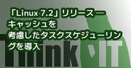
「Linux 7.2」リリース ─ キャッシュを考慮したタスクスケジューリングを導入
Think IT（シンクイット）
「Linux 7.2」リリース ─ キャッシュを考慮したタスクスケジューリングを導入 USB4STREAMやdm-inlinecryptを追加、Btrfsではlarge folioを標準で有効化kawahara2026年8月17日シェア ポスト はてブ 優先するニュース提供元に追加 Linux kernelの最新版、「Linux 7.2」が8月16日付(現地時間)でリリースされた。 「Linux 7.2」は、キャッシュを考慮したタスクスケジューリング、メモリ回収およびスワップ処理の改善、USB4ケーブルを介してデータを転送するUSB4STREAM、新しいインライン暗号化ターゲット「dm-inlinecrypt」などを導入したメインラインリリース。BtrfsやRustサポート、グラフィックスドライバなどについても多数の変更が行われている。 「Linux 7.2」のハイライトは次の通り。〇キャッシュを考慮したタスクのロードバランシングを導入 今回導入されたキャッシュ対応スケジューリングでは、データを共有する同一プロセスのスレッドなどを、同じLLC(Last Level Cache)ドメイン内へ配置するようロードバランシングを行う。キャッシュ間でのデータ移動やキャッシュミスを減らし、データアクセス効率を改善することを目的としている。 メモリ管理では、MGLRUのメモリ回収ループやdirty writeback処理を整理したほか、匿名メモリと共有メモリのスワップ割り当ておよび課金処理をfolio単位で統合した。スワップ用の静的メタデータも削減され、1TBのスワップデバイスをマウントする場合では約512MBのメモリを節約できるという。 Btrfsでは、Linux 6.17から実験的に提供されていたlarge folioが標準で有効化された。最大2MiBのhuge folioについても実験的な対応が加わったほか、シーケンシャル書き込みやダイレクトI/Oの性能改善、チェックサムをユーザー空間から取得するGET_CSUMS ioctlの追加などが行われている。 「Linux 7.2」は、gitもしくはkernel.orgからソースコードを入手できる。(川原 龍人/びぎねっと)[関連リンク]LKMLの投稿Linux 7.2 changes この記事をシェアしてください シェアする ポ
5日前
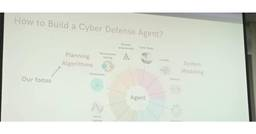
AAAIの夏のシンポジウムより、生成AIが自律的にシステムを防御する仕組みを解説するセッションを紹介
Think IT（シンクイット）
人工知能の国際学会であるAssociation for the Advancement of Artificial Intelligence（AAAI）が主催するシンポジウム「AAAI Summer Symposium 2026」が韓国のソウルで開催された。2026年6月22日から24日の3日間、ソウルの東国大学校の校舎を借りて約40名の参加者とプレゼンターが集ったミニカンファレンスとなった。3つのテーマに分かれてプレゼンテーションと質疑応答、パネルディスカッションを行うというもので、AAAIのカンファレンスが短時間のプレゼンテーションと質疑応答、論文のポスター発表による巨大な論文発表大会であったことと比べると、時間をかけてテーマに沿ったプレゼンテーションを行うという従来型の形式となった。テーマは「AI-Driven Resilience: Building Robust, Adaptive Technologies for a Dynamic World」「Human-Aware AI Agents for the Cyber Battlefield: From Human Models to Autonomous Defense」「AI in Business: Intelligent Transformation and Management」の3つが設定され、個別のテーマに沿った内容のプレゼンテーションがそれぞれ30分程度の時間をかけて行われた。この稿では「Human-Aware AI Agents for the Cyber Battlefield: From Human Models to Autonomous Defense」をテーマとして最初に行われた香港城市大学のLi Tao教授のキーノートを紹介する。これは「From Automation to Autonomy: Decision-Theoretic Cyber Defense Agent in the Age of LLMs」と題されたプレゼンテーションである。このタイトルでは論文化はされていないようだが、大規模言語モデルを使ってサイバー攻撃に対する防御を自律的に行う試みを解説した内容となった。 冒頭のスライドではサイバー攻撃からITシステムを守るエージェントの作り方について4つの軸があると説
6日前
3DGSを使ったフィジカルAI向けロボット訓練事例をNVIDIAらが解説 ほか
Think IT（シンクイット）
今週も、XR・AI領域の最新動向をお届けします。NVIDIAのライブ配信では、360度カメラの映像から3D空間を構築し、ロボットの行動モデルを訓練するフィジカルAIの最前線が示されました。Google DeepMindからは、Pixel 11向けに手話をテキストへ翻訳する新たなAIモデルであるSL2Tが公開されています。またInsta360からは、撮影した動画から手軽に3Dモデルを生成できる空間キャプチャに対応した最新カメラが登場しました。さらにPICO TVとDeoVRが共同で実施する、最大1000ドルの制作支援を受けられるVR映像作品募集プロジェクトを紹介していきます。360度カメラでロボット訓練環境を作る NVIDIAらが語るフィジカルAIと3DGSの交差点 NVIDIA Omniverseの公式YouTubeで、実空間をスキャンしてロボット訓練環境を構築し、そこで学習させた行動モデルを実機で動かす技術が紹介されました。Niantic Spatialの技術では、1回の撮影からガウシアン・スプラッティングとメッシュを同時に出力し、独自の深度モデルでノイズを抑えたシミュレーション環境を作ります。Flexionは市販の360度カメラを使い、短時間かつ低コストでオフィスを取り込み、Isaac Lab上で行動モデルを強化学習させました。訓練された行動モデルは追加学習なしで実機に移され、机の位置が異なっていても経由地をたどり、透明な板や未学習の三脚も避けて動作しました。今後はレイトレーシングにより、金属や透明な物体の表現がさらに強化される予定です。本ニュースの詳細はこちら：360度カメラでロボット訓練環境を作る NVIDIAらが語るフィジカルAIと3DGSの交差点https://www.moguravr.com/nvidia-3dgs-humanoid-sim-to-real/スマホのカメラで手話を認識、Google Deepmindが手話翻訳AIをPixel 11に提供 Google DeepMindは、手話をテキストへ翻訳するAIモデルであるSL2Tを発表しました。このモデルはPixel 11のGboardとLive Transcribeに搭載され、まずはアメリカ手話から英語への翻訳に対応します。50以上の手話を含む10万時間以上のデータで学習されており、単語ごとの置
6日前
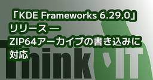
「KDE Frameworks 6.29.0」リリース ─ ZIP64アーカイブの書き込みに対応
Think IT（シンクイット）
「KDE Frameworks 6.29.0」リリース ─ ZIP64アーカイブの書き込みに対応 KIOのサムネイル処理やKirigami、KWallet、文字コード判定などを改善kawahara2026年8月15日シェア ポスト はてブ 優先するニュース提供元に追加 KDE Projectは8月14日(現地時間)、KDEアプリケーションの基盤となるライブラリ群「KDE Frameworks 6.29.0」をリリースした。 「KDE Frameworks」は、Qtベースのソフトウェアスタックやアプリケーションにおいて、共通して利用できるライブラリとフレームワークのコレクション。ハードウェアの統合、ファイルフォーマットのサポート、追加のコントロール要素、プロット関数、スペルチェックなどの機能を持ち、「KDE Plasma」や「KDE Applications」などの基盤を成している。 「KDE Frameworks 6.29.0」のハイライトは次の通り。〇KArchiveでZIP64アーカイブの書き込みに対応 「KDE Frameworks 6.29.0」を利用するには、Qt 6.9.0以降が必要。KDE Frameworks 6.29.0は、Webサイトから入手できる。(川原 龍人/びぎねっと)[関連リンク]リリースアナウンスKDE Frameworks 6.29.0 Info この記事をシェアしてください シェアする ポストする >ブクマする noteで書く 優先するニュース提供元にThink ITを追加 前の記事「Samba 4.24.6」リリース ─ CephFS共有でのsmbdクラッシュなどを修正 次の記事「Linux 7.2」リリース ─ キャッシュを考慮したタスクスケジューリングを導入 関連記事この記事の筆者 kawahara kawaharaのプロフィールを見る 筆者の人気記事 「Linux Mint 22.3」、Linux 7.0搭載HWE ISOを公開8月11日 0:05 「GNU Linux-libre 7.2」リリース ─ AMD、Qualcomm、Intel関連ドライバのdeblob処理を更新8月21日 0:33 「SparkyLinux 8.4」リリース ─ 32bit PC向けISOを復活8月11日 23:28 軽量Linuxディストリビ
7日前
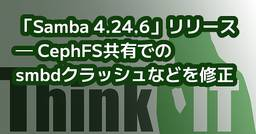
「Samba 4.24.6」リリース ─ CephFS共有でのsmbdクラッシュなどを修正
Think IT（シンクイット）
「Samba 4.24.6」リリース ─ CephFS共有でのsmbdクラッシュなどを修正 DRSのメモリリークやpthreadpoolの競合状態、CTDBの選挙処理も改善kawahara2026年8月15日シェア ポスト はてブ 優先するニュース提供元に追加 Samba Teamは8月13日(現地時間)、ファイル共有ソフトウェア「Samba 4.24.6」をリリースした。 「Samba」は、LinuxおよびUNIX系システムでSMBやActive Directoryなどのプロトコルを利用可能にするオープンソースソフトウェア。Windowsクライアント向けのファイル・プリンタ共有、Active Directoryドメインコントローラ、ドメインメンバサーバなどとして利用できる。 「Samba 4.24.6」では、4.24.5で確認された、CephFS共有へのアクセス時にsmbdがクラッシュする問題、ディレクトリレプリケーションサービス(DRS)のメモリリーク、pthreadpoolおよびCTDBの競合状態などが修正されている。 「Samba 4.24.6」の主な修正点は次の通り。〇DRSのレプリケーション失敗時に発生するメモリリークを修正 「Samba 4.24.6」は、Webサイトから入手できる。(川原 龍人/びぎねっと)[関連リンク]リリースノート この記事をシェアしてください シェアする ポストする >ブクマする noteで書く 優先するニュース提供元にThink ITを追加 前の記事「rsync 3.5.0」リリース ─ 33件の脆弱性を修正 次の記事「KDE Frameworks 6.29.0」リリース ─ ZIP64アーカイブの書き込みに対応 関連記事この記事の筆者 kawahara kawaharaのプロフィールを見る 筆者の人気記事 「Linux Mint 22.3」、Linux 7.0搭載HWE ISOを公開8月11日 0:05 「GNU Linux-libre 7.2」リリース ─ AMD、Qualcomm、Intel関連ドライバのdeblob処理を更新8月21日 0:33 「SparkyLinux 8.4」リリース ─ 32bit PC向けISOを復活8月11日 23:28 軽量Linuxディストリビューション「DietPi 10.6」リリース
7日前
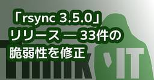
「rsync 3.5.0」リリース ─ 33件の脆弱性を修正
Think IT（シンクイット）
「rsync 3.5.0」リリース ─ 33件の脆弱性を修正 PROXY Protocolの送信元偽装や任意ファイル操作、コマンドインジェクションなどに対処kawahara2026年8月15日シェア ポスト はてブ 優先するニュース提供元に追加 rsync Projectは8月13日(現地時間)、ファイル同期・転送ツール「rsync 3.5.0」をリリースした。 「rsync」は、ローカルまたはネットワーク上のシステム間でファイルやディレクトリを同期するオープンソースのツール。ファイル全体ではなく変更された部分を転送する差分転送アルゴリズムを採用しており、バックアップ、ミラーリング、サーバ間のデータ同期などで広く利用されている。 「rsync 3.5.0」は、パス処理およびデーモンプロトコルに対する集中的な監査、デーモンプロトコルのファジング、外部研究者からの報告などを基に、33件の脆弱性を修正したセキュリティリリース。内訳はCRITICALが1件、HIGHが17件、MEDIUMが15件となる。すべての修正には、未修正版で失敗する回帰テストが追加されている。 「rsync 3.5.0」のハイライトは次の通り。〇PROXY Protocolの送信元アドレス偽装によるアクセス制御回避(CRITICAL、CVE-2026-53791) 最も深刻度が高い「CVE-2026-53791」は、「proxy protocol = true」を設定したrsyncデーモンに直接接続したクライアントがPROXYヘッダを送信し、送信元アドレスを偽装できる脆弱性。悪用されると、ホストベースのアクセス制御を回避される危険がある。 また、今回のアップデートによって、転送された送信元アドレスを「proxy protocol hosts」で設定された信頼済みプロキシから受信した場合にのみ使用するよう変更された。また、「proxy protocol = true」を有効にしながら「proxy protocol hosts」が設定されていない場合は、すべての接続が拒否される。 「rsync 3.5.0」は、Webサイトから入手できる。(川原 龍人/びぎねっと)[関連リンク]NEWS for rsync 3.5.0 この記事をシェアしてください シェアする ポストする >ブクマする noteで書く 優先
7日前
Kaggleは「次の一歩へ踏み出す」のに役に立つ ー組み込み→画像AI→医療AI、3段階の越境が教えてくれたこと
Think IT（シンクイット）
はじめにいま私は臨床検査会社の株式会社ビー・エム・エル(BML)で臨床検査AIエンジニアとして働いています。2025年まではソニーでコンシューマ向け画像AI開発をやっていて、その前はソニー半導体事業領域の組み込みソフトウェアエンジニアでした。ソニー在籍中に、社内Kaggleコミュニティ「カグル部」を立ち上げました。組み込み→画像AI→医療AI。振り返ると3段階もドメインが変わっています。どれも自分で次の一歩を踏み出した結果で、そのどの場面でもKaggleにかなり助けられてきました。本稿は「Kaggleは〇〇に役に立つ」連載の1本として、Kaggleが自分のキャリアにどう効いてきたのかを、地味な話も含めて振り返ってみます。 図1：キャリアの3段階の越境と、それを支えたKaggleの歩みAIエンジニアとしての次の一歩—— Kaggleに飛び込んだ自分のキャリアは、大学院で古典的な画像処理による高画質化を研究していたところから始まりました。修士を出てソニー半導体事業領域に入社、最初は組み込みソフトウェアエンジニアでした。転機は、入社3年目にやってきたAI関連の案件でした。当時はDeep Learningの実応用が国内メーカーにも広がり始めた頃。AIに詳しい人が自分の周りにはほとんどいない環境で、社内R&Dの有識者の力は借りつつ、自分なりに手探りで進めていく形でした。顧客ヒアリングからアプリケーション開発、モデルの学習・評価まで、扱う範囲は広く、自分の理解は浅い。そんな状態のなか、社内PoCをなんとか形にすることはできました。でも、終わってみると残ったのは達成感より実力不足感の方でした。いま振り返ると、あのときの自分は「特定タスクの、特定の解き方」を分かった気になっていただけでした。AIという広い世界のほんの一角を触って「できる」と感じていたに過ぎない。そう気づいて、「ちゃんとAIを理解したい」と強く思うようになりました。「じゃあ、自分でやるしかない」。そう思って2021年からKaggleで本格的にコンペに挑み始めました。同じタイミングで、業務でも本格的にAIに向き合いたくて、自分から手を挙げてソニーのコンシューマ向け画像AI開発チームへ異動しました。どちらも誰かに指示されたわけでも、業務命令でもなく、完全に自分判断でした。ただ、Kaggleは想像以上に厳しかったです。難易
9日前
【クラウドネイティブ会議】OSS依存と自作の保守負荷をどう見極めるか――AI時代に変わるBuild vs Adopt判断
Think IT（シンクイット）
クラウドネイティブの世界では「OSSがあるなら自作するな」という考え方が広く共有されてきた。しかし、AIコーディングの進化により、BuildとAdoptの判断基準は変わりつつある。クラウドネイティブ会議のセッション「『OSSがあるなら自作するな』はAI時代も正しいか――Build vs Adoptの新しい判断基準」では、サイバーエージェントの石川雲氏が、KubeVelaをめぐる依存と移行の課題をもとに、OSSに依存するコストと自作して所有するコストを比較し、AI時代に必要な判断軸を解説した。「OSSがあるなら自作するな」は、AI時代も正しいのか「OSSがあるなら自作するな」。クラウドネイティブの世界では、長くそうした考え方が共有されてきた。Kubernetesをはじめ、成熟したOSSエコシステムを活用することで、多くの現場は開発・運用の負荷を下げてきた。しかし、AIコーディングの進化により、この前提は揺らぎ始めている。仕様を整理すればコードやテスト、ドキュメント作成をAIが支援し、以前なら実装コストの高さから見送っていた機能も短時間で作れるようになりつつある。では、AI時代においても「OSSがあるなら自作するな」という原則は正しいのか。サイバーエージェントの石川雲氏は、事業会社側の技術選定責任者という立場から、この問いを掘り下げた。石川氏は最初に、今回の話は特定OSSの評価でも、AI実装の詳細でも、OSS不要論や全面内製論でもないと前置きした。そのうえで、AI時代ではBuildすべき領域は増えたが、それは「AIで何でも作れるから」ではないとも強調した。全部をAdoptするのでも、全部をBuildするのでもなく、Adoptしながら必要な部分をBuildする※。その判断基準を見直すことが、本セッションの主題である。※：Build：自前での作成。Adopt：既存のOSSの利用。 KubeVela採用から見えた、Adoptの依存コストまず石川氏が取り上げたのは、5年前のAdopt判断である。2021年、同氏らはKubernetes Manifestの抽象化ツールであるKubeVelaを採用した。当時の判断は自然なものだったという。KubeVelaは、同氏らのPlatformに必要なコア要件を満たしていたからだ。求めていたのは、ユーザーがKubernetesを深く理解しなくて
9日前
「Netdata 2.11.0」リリース ─ NetFlow/IPFIX/sFlow分析をプレビュー導入
Think IT（シンクイット）
「Netdata 2.11.0」リリース ─ NetFlow/IPFIX/sFlow分析をプレビュー導入 L2/L3ネットワークトポロジーやOTLPログ取り込み、AWS CloudWatch監視にも対応kawahara2026年8月13日シェア ポスト はてブ 優先するニュース提供元に追加 Netdata.cloudは8月12日(現地時間)、リアルタイム監視プラットフォーム「Netdata 2.11.0」をリリースした。 「Netdata」は、サーバ、コンテナ、アプリケーション、ネットワーク機器などからメトリクスを収集し、リアルタイムで可視化・監視できるオープンソースのプラットフォーム。監視対象にNetdata Agentを導入することで、システムやサービスの状態を秒単位で収集できる。 「Netdata 2.11.0」ではネットワーク監視機能が拡張され、NetFlow、IPFIX、sFlowのフローデータ分析、SNMPを使用したL2/L3トポロジーの検出、アプリケーション間の依存関係の可視化などがテクニカルプレビューとして導入された。 また、OpenTelemetry Protocol(OTLP)によるログの取り込み、AWS CloudWatchコレクタ、新しいSNMP Trap Listener、Prometheusコレクタの再構築なども行われている。 「Netdata 2.11.0」のハイライトは次の通り。 「Netdata 2.11.0」は、GitHubから入手できる。(川原 龍人/びぎねっと)[関連リンク]Netdata v2.11.0(GitHub) この記事をシェアしてください シェアする ポストする >ブクマする noteで書く 優先するニュース提供元にThink ITを追加 前の記事「QEMU 11.1.0」リリース ─ UFS 4.1のWrite BoosterやHIDをサポート 次の記事「rsync 3.5.0」リリース ─ 33件の脆弱性を修正 関連記事この記事の筆者 kawahara kawaharaのプロフィールを見る 筆者の人気記事 「Linux Mint 22.3」、Linux 7.0搭載HWE ISOを公開8月11日 0:05 「GNU Linux-libre 7.2」リリース ─ AMD、Qualcomm、Intel関連ドライバのd
9日前
Postmanのテクノロジー・エバンジェリスト川崎庸市さん
Think IT（シンクイット）
はじめにDevRelに関わる人たちは増えている一方で「なぜDevRelに関わるようになったのか」「どういったキャリアを歩んで現在があるのか」については、あまり明らかにされていません。それぞれ異なるキャリアを歩んできていますが、その共通項を探っていこうというのが本連載の目的です。DevRelとしてのキャリアに興味がある方に、ぜひ読んでほしいです。第4回目となる今回は、Postman株式会社のテクノロジー・エバンジェリスト川崎庸市さんに、これまでのキャリアとDevRelとの関わりについて話を聞きました。話を通じて印象的だったのは、川崎さんが一貫して「現場感」を重視していることです。DevRelという職種を、単なる発信やイベント運営ではなく、技術とユーザーの課題をつなぐ仕事として捉えている姿が見えてきます。社内開発からキャリアを始めソフトウェアエンジニアとして約10年を過ごす川崎さんのキャリアは、大学卒業後に入社したテック系ベンチャーから始まりました。ソフトウェアエンジニアとしてキャリアをスタートし、2社のベンチャー企業とYahoo! JAPANで、合計約10年にわたって開発に携わってきたそうです。扱ってきた領域は幅広く、Webサービス、モバイル向けの組み込み系ソフトウェア、大規模サービスのバックエンド、社内サービス基盤のようなプラットフォーム開発まで経験しています。当時を振り返り、川崎さんは「あまり外に出ることもなく、会社の中で内向きの開発をずっとやっていた」と話します。 Yahoo! JAPAN時代 出張先のYahoo inc.にてその頃は、自分は一生ソフトウェアエンジニアとしてやっていくのだろうと考えていたそうです。そこから転機になったのが、Microsoft時代のAzureのソリューションアーキテクトでの経験です。ソリューションアーキテクトとしてプリセールスに関わり、顧客やユーザーに向けてクラウドのアーキテクチャ策定や技術支援を行っていました。川崎さんは、DevRelのようなことに関わるきっかけは、この経験だったと振り返ります。それまで社内開発が中心だった川崎さんにとって、外部の顧客やユーザー、コミュニティに向き合う仕事は大きな変化でした。「社外の人たちと関係を築くことや会話すること、お客さんと向き合って仕事をすることが好きだと気づいた」と話していたのが印象的です
10日前
「AIの精度不足はモデルのせいではない」――TricentisがTabnineを買収し、テスト用AIエージェントに企業システムの構造理解を持たせる
Think IT（シンクイット）
📌 このニュース、3行で押さえるなら 📌エージェント型品質エンジニアリングのTricentisが、エンタープライズ向けAIコーディングプラットフォームのTabnineを買収。TabnineのEnterprise Context Engine技術をTricentisの品質エンジニアリングプラットフォームに統合するEnterprise Context Engineは、従来の類似性ベースのRAGを超え、リポジトリ・ドキュメント・チケット・API・インフラメタデータからエンティティ、相互関係、依存関係、アーキテクチャパターンを抽出し、組織全体のシステムに関する構造化されたナレッジグラフを継続的に構築・更新する同エンジンを導入した企業では、AIの精度が最大2倍向上、トークン消費量が最大80%削減、複雑なタスクの解決時間が最大50%短縮したとの報告がある。オンプレミス、プライベートVPC、フル・エアギャップ環境に対応する📝 Think IT編集部の見解 📝この買収で目を引くのは、Tabnineという会社の位置づけの変化だ。TabnineはもともとAIコーディングアシスタントとして知られてきた製品であり、コードを書く側のツールだった。それが今回、コードを書く機能ではなく「企業システムを構造として理解する技術」を評価されて、品質保証・テストの会社に買われている。コード生成そのものはモデルの進化とともにコモディティ化が進む一方、企業固有のシステム構造を継続的にモデル化するレイヤーには希少価値が残る、という判断が透けて見える。技術的な争点はRAGの限界にある。類似性ベースの検索は「このコードに似た記述はどこにあるか」には答えられるが、「この関数を変更すると何が壊れるか」には答えられない。依存関係は類似性ではなく構造だからだ。TricentisのCEOであるケビン・トンプソン氏が「課題はAIモデル自体の性能ではなく、コンテキストの欠如にあった」と述べているのは、この構造の欠落を指している。ナレッジグラフでエンティティ間の関係を持つアプローチは、その欠落を埋めようとするものだ。インフラエンジニアやSREの視点で読むと、ここで扱われている「依存関係・影響分析」は既視感のある問題だろう。障害発生時に影響範囲を特定する作業、変更管理でブラストラディウスを見積もる作業と、本質的に同じ問いで...
10日前